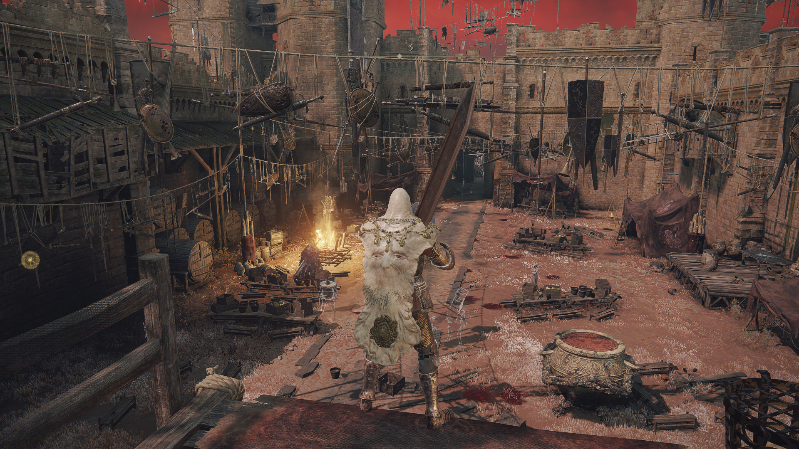
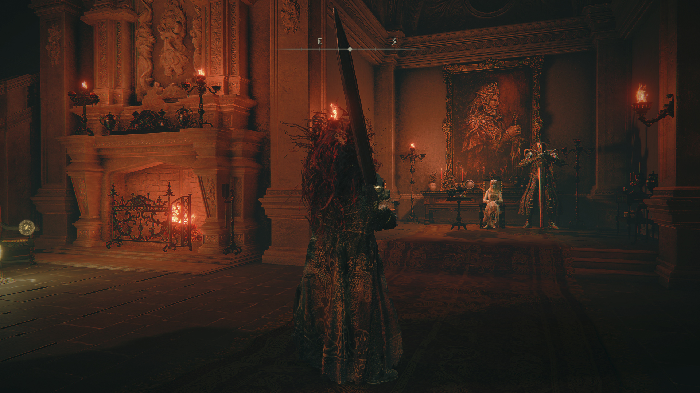
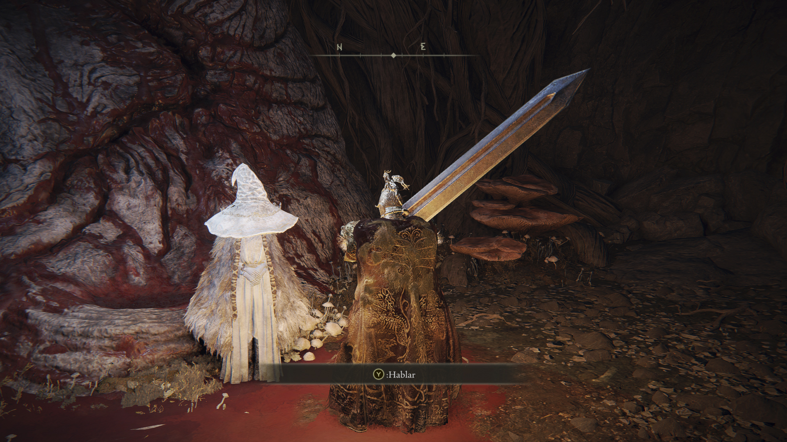

En las Tierras Intermedias al ser un lugar desolado, los eventos que ocurren son vestigios de lo que pudieron ser en su tiempo. Estas son algunas de las actividades:
- Festival de Radahn
- Un festival anual donde diferentes guerreros se enfrentan contra Radahn, Azote de las Estrellas, semidios caído en desgracia, en busca de una muerte digna. 
- Mansión del Volcán
- Un grupo de traidores al Árbol Aurero que buscan el poder asesinando a otros Sin-Luz y realizando tareas. 
- Mesa de la Gracia Perdida
- Un grupo de héroes, refugiados y vagabundos errantes que se juntan en la paz de este lugar en búsqueda de convertirse en el nuevo Señor de Elden
- Seguidores de Ranni
- Servidores de la Bruja Ranni que la ayudan en busca de un tesoro escondido y de su cuerpo físico perdido. 